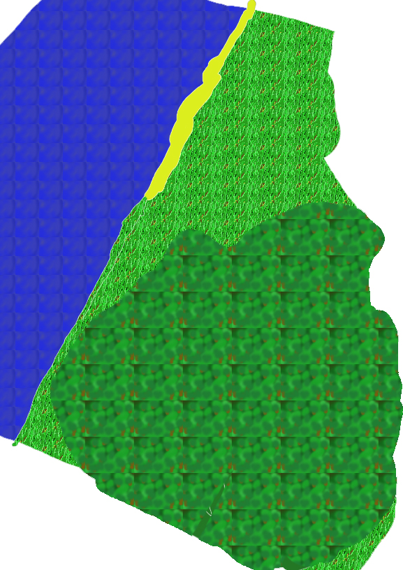

back
Haunted Forest

Very little is known about the Haunted Forest, it got its name because of the eary feeling anyone gets when he approaches it too much. Most people never return from it, the only people who dare venture in it and come back are evil witches who plagues the Kingdom of Eulice.
Cities: There are no cities here
Landmark:
It is rumored that within the Haunted Forest lies a Witch Den, somewhere where ritual takes place and witch share their secrets. No one ever obtained any proof of this though.
Environment:
The Haunted Forest has really weird trees and vegetation growing in it. Every tree look as if they had faces and were alive, it is said that just standing in the forest for too long could make people go insane and slash their throat open. Enter this region with utmost caution.
Wildlife and Monsters:
It is unknown what kind of monster lies in the forest, usually people go insane before they reach any wildlife.